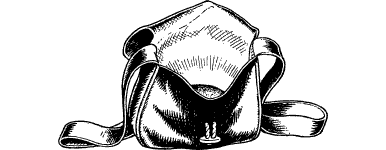

167
The corpse-creature implodes the very instant that it is struck by the radiant light of the Moonstone. Air and loose earth rush past you to be sucked into the vacuum formed by its sudden destruction, and you are forced to cling to the ground for fear of being dragged into this crushing vortex. Then, with stunning abruptness, the swirling vacuum shoots skywards and vanishes among the clouds.
{kind=link}

The Shaman howls with mortal terror and flees into the jungle, his power destroyed. The natives stagger drunkenly, as if suddenly they have awoken from a trance. They fall to their knees and begin to worship you, for they recognize that you have broken the Shaman’s spell and they are in awe of your power.
You allow the natives to escort you to Kitaezi, their coastal city, where you are treated like a hero by the impoverished populace. You learn that Kitaezi was once a thriving port before the arrival of Ulonga the Shaman. He used his power to overthrow the tribal chieftain, enslave the people, and drive away the traders. For a year he has been the bane of this port and its poor citizens, but now he is gone and the people are eager to celebrate his demise. They smash the many statues and likenesses of Ulonga that stand in every public square and they sing and dance through the streets.
At a ceremony held in the city’s main square, you are bedecked with garlands of flowers and presented with three special items:
- Pouch of Seota Dust (Restores 10 ENDURANCE points. One use only.)
- Talisman of Defiance (Adds +2 to COMBAT SKILL.)
- Eye of Lhaz (Enables user to exert control over poisonous snakes.)
All of the above are Special Items which you keep in the pockets of your tunic. Record them on your Action Chart and note their special properties.
To continue, turn to 153.